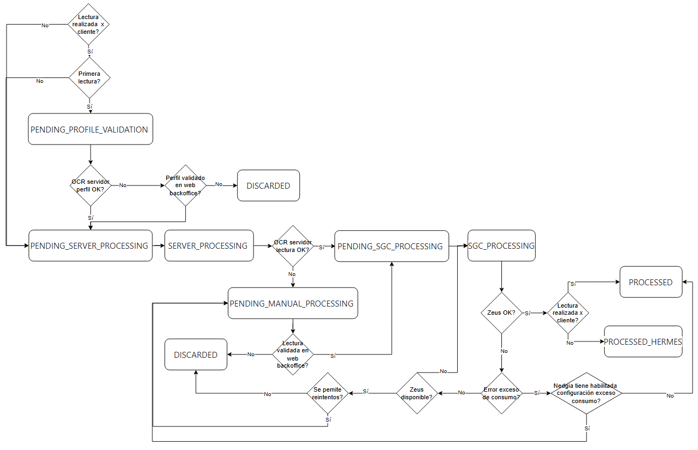

Cuando se toma una foto de un contador desde la aplicación móvil de YoLeoGas y se envía la lectura obtenida, se llama a la API de backoffice (ver detalle de los servicios en el DF de la App YoLeoGas, apartados 3.5. NU_05 - Toma de lectura y 3.7. NU_07 - Toma de lectura desde W&T) y las entidades PROFILE, IMAGE y OPERATOR del backoffice quedan informadas de la siguiente forma:
PROFILE → se informa solo si es una primera lectura
Si la lectura la ha realizado un cliente,
prf_id: identificador único del perfil → valor del identificador único de la imagen al subirse al Blog Storage
prf_name: nombre del perfil → valor del nombre del contador de la entidad Contador
prf_cups: CUPS del punto de suministro → valor del CUPS de la entidad Contador
prf_image_input_chanel: canal desde el que se ha creado el perfil → valor MOBILE
pfr_status_stage: estado en el que se encuentra el perfil → valor PENDING_SERVER_PROCESSING
prf_creation_date: fecha en la que se ha creado el perfil
prf_allow_notifications: indica si el usuario quiere recibir notificación push → valor de “Permite notificaciones de aviso de próxima lectura” de la entidad Contador
pr_notification_hour: hora en la que se puede enviar la notiicación push → valor de “Hora notificación aviso próxima lectura” de la entidad Contador
prf_locale: idioma del dispositivo → valor de “Idioma del dispositivo” de la entidad Contador
Si la lectura la ha realizado un técnico,
prf_id: identificador único del perfil → valor del identificador único de la imagen al subirse al Blog Storage
prf_name: nombre del perfil → valor del nombre del contador de la entidad Contador, que en este caso es “hermesprofile” siempre
prf_cups: CUPS del punto de suministro → valor del CUPS de la entidad Contador
prf_image_input_chanel: canal desde el que se ha creado el perfil → valor HERMES
pfr_status_stage: estado en el que se encuentra el perfil → valor PROCESSED
prf_creation_date: fecha en la que se ha creado el perfil
oper_id: identificador del técnico que ha creado el perfil → valor de “Identificador del técnico”
prf_locale: idioma del dispositivo → valor de “Idioma del dispositivo” de la entidad Contador
IMAGE → se informa para todas las lecturas
Si la lectura la ha realizado un cliente,
image_id: identificador único de la imagen → valor del identificador único de la imagen al subirse al Blog Storage
prf_id: perfil del contador al que está asociada la imagen → valor de pr_id de la entidad PROFILE
prf_image_blob: nombre de la imagen que se le ha dado al subirla al Blob Storage
image_input_channel: canal desde el que se ha creado la imagen-> valor MOBILEPROFILE si es la primera lectura, valor MOBILE si no lo es
image_status_stage: estado de la imagen → valor PENDING_PROFILE_VALIDATION si es una primera lectura, valor PENDING_SERVER_PROCESSING si no lo es
image_status_result_mobile: estado de la lectura que ha dado el OCR móvil → valores: OK, NOK
image_date_processed_mobile: fecha en la que se ha recibido la lectura → valor de “Fecha en la que se ha realizado la lectura” de la entidad Lectura
image_meter_reading_value_user: valor de la lectura que se ha enviado desde la app móvil (la del OCR móvil o la modificada manualmente) → valor de “Lectura usuario” de la entidad Lectura, si viene informada si no, valor de la lectura OCR del móvil de la entidad Lectura
image_meter_reading_value_mobil: valor de la lectura que ha enviado el OCR de la app móvil → valor de la lectura OCR móvil de la entidad Lectura
image_retry: número de veces que se ha repetido la fotografía antes de enviarla → valor de “Número de reintentos” de la entidad Lectura
image_meter_reading_confidence_mobile: nivel de confianza global que ha dado el OCR móvil
image_meter_reading_confidence_mobile_digit*: nivel de confianza del OCR de la app móvil para cada dígito → valor de “Valor confianza OCR móvil dígito 1 .. 8” de la entidad Lectura
platform: sistema operativo del dispositivo desde donde se ha capturado la imagen → valor de “Sistema operativo” de la entidad Contador
phone_model: modelo del dispositivo desde donde se ha capturado la imagen → valor de “Modelo del dispositivo” de la entidad Contador
app_version: versión de la aplicación móvil desde donde se ha capturado la imagen → valor de “Versión de la aplicación móvil ” de la entidad Contador
info_device: versión del sistema operativo del dispositivo desde donde se ha capturado la imagen → valor de “Versión del sistema operativo” de la entidad Contador
Si la lectura la ha realizado un técnico,
image_id: identificador único de la imagen → valor del identificador único de la imagen al subirse al Blog Storage
prf_id: perfil del contador al que está asociada la imagen → valor de pr_id de la entidad PROFILE
prf_image_blob: nombre de la imagen que se le ha dado al subirla al Blob Storage
image_input_channel: canal desde el que se ha creado la imagen-> valor HERMES
image_status_stage: estado de la imagen → valor PENDING_SERVER_PROCESSING
image_status_result_mobile: estado de la lectura que ha dado el OCR móvil → valores: OK, NOK
image_date_processed_mobile: fecha en la que se ha recibido la lectura → valor de “Fecha en la que se ha realizado la lectura” de la entidad Lectura
image_meter_reading_value_user: valor de la lectura que se ha enviado desde la app móvil (la del OCR móvil o la modificada manualmente) → valor de “Lectura usuario” de la entidad Lectura, si viene informada si no, valor de la lectura OCR del móvil de la entidad Lectura
image_meter_reading_value_mobil: valor de la lectura que ha enviado el OCR de la app móvil → valor de la lectura OCR móvil de la entidad Lectura
image_meter_reading_confidence_mobile: nivel de confianza global que ha dado el OCR móvil
platform: sistema operativo del dispositivo desde donde se ha capturado la imagen → valor de “Sistema operativo” de la entidad Contador
phone_model: modelo del dispositivo desde donde se ha capturado la imagen → valor de “Modelo del dispositivo” de la entidad Contador
app_version: versión de la aplicación móvil desde donde se ha capturado la imagen → valor de “Versión de la aplicación móvil ” de la entidad Contador
info_device: versión del sistema operativo del dispositivo desde donde se ha capturado la imagen → valor de “Versión del sistema operativo” de la entidad Contador
OPERATOR → solo se informa si la fotografía la ha realizado el técnico
oper_id: identificador único del operador → valor de “Identificador del técnico”
oper_oper_id: código de identificación del operador → valor interno
oper_name: nombre y apellidos del operador → valor de “Nombre y apellidos del técnico”
oper_last_image_app_version: versión de la aplicación móvil con la que se ha capturado la última imagen → valor de “Versión de la aplicación móvil ” de la entidad Contador
A partir de esta situación inicial, se lanzan los procesos que determinan el ciclo de vida de las lecturas.
Se identifican todos los perfiles que se han de enviar al OCR del servidor, es decir, de la entidad PROFILE se seleccionan todos los registros que tienen en prf_status_stage el valor PENDING_SERVER_PROCESSING y se envían (proceso WorkerNedgiaReadingSender)
De la respuesta del OCR del servidor (proceso ProcessPendingImages),
se comprueban los índices de confianza del perfil que ha devuelto el OCR del servidor y se comparan con los definidos para el perfil en la entidad DISTRIBUTOR_CONFIGURATION. Si lo superan, el perfil se valida correctamente; si no lo superan, el perfil se envía a validación manual
Se actualiza la entidad PROFILE de la siguiente forma:
prf_status_result_server: estado que ha asignado el OCR del servidor al perfil → valores: OK (si ha superado el umbral definido) , NOK (si no ha superado el umbral definido)
pfr_status_stage: estado en el que se encuentra el perfil → valores: PENDING_IMAGE_PROCESSING (si prf_status_result_server es OK) ,
PENDING_MANUAL_PROCESSING (si prf_status_result_server es NOK)
prf_status_reason_nok_server: motivo del KO del OCR del servidor → solo informado si valor de prf_status_result_server es NOK, con el motivo que indique el OCR del servidor
prf_meter_serial_value_server_id: número de serie del contador que ha identificado el OCR
prf_date_processed_server: fecha en la que se ha procesado el perfil por el OCR del servidor
prf_meter_serial_confidence_server_id: nivel de confianza que ha devuelto el OCR del servidor
Se actualiza de la entidad IMAGE:
image_status_stage: estado de la imagen → valor PENDING_SERVER_PROCESSING
Se identifican todas las lecturas pendientes de enviar, es decir, de la entidad IMAGE se seleccionan todos los registros que tienen en image_status_stage el valor PENDING_SERVER_PROCESSING y se envían (proceso WorkerNedgiaReadingSender)
Con la respuesta del OCR del servidor (proceso ProcessPendingImages),
se comprueban los índices de confianza de la lectura que ha devuelto y se comparan con los definidos para la lectura en la entidad DISTRIBUTOR_CONFIGURATION. Si lo superan, la lectura se valida correctamente; si no lo superan, la lectura se envía a validación manual
Se actualiza la entidad IMAGE de la siguiente forma:
image_status_result_server: estado de la lectura que ha dado el OCR del servidor → valores: OK (si han superado el umbral definido) , NOK (si no lo han superador)
image_status_stage: estado de la imagen → valores PENDING_SGC_PROCESSING (si image_status_result_server es OK), PENDING_MANUAL_PROCESSING (si image_status_result_server es NOK)
image_status_reason_nok_server: motivo del KO del OCR servidor → solo informado si image_status_result_server es KO
image_meter_reading_value_server: valor de la lectura que ha enviado el OCR servidor
image_meter_reading_confidence_server: nivel de confianza que ha dado el OCR servidor
image_meter_reading_confidence_server_digit*: nivel de confianza del OCR del servidor para cada dígito
image_date_processed_server_reading_start: fecha en la que el OCR del servidor ha empezado a procesar la imagen
image_date_processed_server_reading_end: fecha en la que el OCR del servidor ha terminado de procesar la imagen
Si el OCR de servidor ha dado OK a la lectura (image_status_result_server de la entidad IMAGE tiene valor OK),
se actualiza pfr_status_stage de la entidad PROFILE con valor PROCESSED
se envía la lectura a la
se actualiza de la entidad
image_status_stage con el valor PENDING_SGC_PROCESSING
mage_date_processed_sgc con la fecha en la que se ha enviado la lectura a la distribuidora
se envía la imagen a Documentum y se actualiza image_date_processed_documentum de la entidad IMAGE con la fecha en la que se ha subido a Documentum
La distribuidora notifica el resultado de lo que ha recibido (llamando al método POST /api/wmb )
si ha sido procesado, se tiene respuesta y es OK → se actualiza image_status_stage de la entidad IMAGE
con el valor PROCESSED si image_input_channel es MOBILE o MOBILEPROFILE
con el valor PROCESSED_HERMES si image_input_channel es HERMES
si ha sido procesado, se tiene respuesta y se ha producido algún error
si el error es de exceso de consumo, se consulta si la distribuidora tiene habilitada la configuración del exceso de consumo (en la entidad DISTRIBUTOR_CONFIGURATION)
si la tiene habilitada→ se actualiza de la entidad IMAGE
image_status_stage con el valor PENDING_MANUAL_PROCESSING
image_status_reason_nok_sgc con el código del error que ha devuelto la distribuidora
si no la tiene → se actualiza image_status_stage de la entidad IMAGE con el valor PROCESSED
si el error no es de exceso de consumo
si Zeus ha devuelto error de comunicación, no se actualiza nada y se reintentará en el paso siguiente
si Zeus ha devuelto otro error, se consulta si la distribuidora permite reintentos (en la entidad DISTRIBUTOR_CONFIGURATION)
si permite reintentos → se actualiza image_status_stage de la entidad IMAGE con el valor PENDING_MANUAL_PROCESSING
si no permite reintentos → se actualiza image_status_stage de la entidad IMAGE con el valor DISCARTED
Revisión de los envíos a la distribuidora que han dado error o que hace más de dos horas que no se obtiene respuesta (proceso ProcessFailedImage)
Se seleccionan de la entidad IMAGE todos los registros que cumplen que image_status_stage tiene valor PENDING_SGC_PROCESSING y image_date_processed_sgc es menor que la fecha actual menos dos horas
Todo lo obtenido, se vuelve a enviar a la distribuidora (de la misma forma que se ha explicado anteriormente)
A continuación se incluye un diagrama del flujo de estados.
PROFILE
